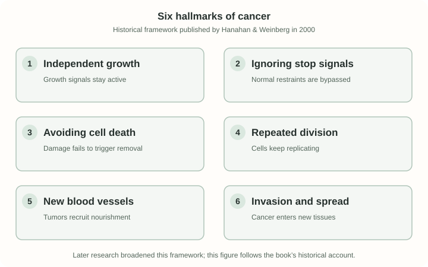

Why a tumor is more than a lump of dividing cells
The chapter opens by returning to Philip Leder's OncoMouse. Scientists had shown that altering ras and myc could help produce real tumors. This was a major success for cancer genetics. Yet many engineered cells did not become tumors, and the cancers that developed varied in how they behaved.
That raised a fundamental problem. Cancer is not merely a fast-growing group of cells. Malignant cells can survive conditions that would kill normal cells, move into surrounding tissue, travel to distant organs, recruit blood vessels, and become resistant to treatment.
What sequence of biological changes gives a cell all these abilities? Identifying an oncogene is not the same as explaining a complete cancer. The chapter moves from individual genes toward an overall model of malignancy.
Bert Vogelstein asks how cancers develop over time
In 1988, physician-scientist Bert Vogelstein of Johns Hopkins began studying the genetic stages of colon cancer. Earlier researchers had noticed that some tumors appeared gradually, passing through recognizable stages before becoming invasive.
For example, a small abnormal growth in the colon can remain a benign adenoma before accumulating further changes and developing into a carcinoma. Other investigators, such as George Papanicolaou and Oscar Auerbach, had observed precancerous changes in other tissues.
Vogelstein wanted to know whether the visible progression from normal tissue to a tumor had a matching genetic progression. Were the stages simply changes in appearance, or did they reflect successive alterations in the genes regulating cells?
The colon as a record of cancer's development
Directly experimenting on the development of cancer inside healthy human beings would be unethical. But researchers could examine tissue samples from patients who already had different stages of colon growth.
Vogelstein collected samples representing stages such as relatively normal tissue, early adenomas, more advanced adenomas, and invasive cancers. He examined them for a selected set of known or suspected cancer-related genetic alterations.
The approach was like examining different stages of construction on several building sites. You cannot rewind time in one finished building, but by comparing many partly completed buildings, you can infer the sequence of work that usually occurs.
It was a retrospective method for understanding progression—not a record of one patient deliberately followed from a normal cell to a malignancy.
A stepwise pattern emerges
Vogelstein found a relationship between increasing tumor abnormality and the accumulation of genetic changes. Early growths had some alterations; more advanced tumors tended to have additional ones.
The crucial insight was that cancer did not usually arise from one sudden, complete transformation. It could develop through a multistep process as a growing population of cells acquired successive changes.
A useful simplified sequence is:
Normal tissue → early abnormal growth → adenoma → more advanced adenoma → invasive carcinoma.
This is a conceptual sequence, not a claim that every colorectal cancer follows the same exact path or that every adenoma inevitably progresses. The book's emphasis is that the visible changes in tissue can correspond to accumulating genetic abnormalities.
Why the multistep model explained a major puzzle
By the late 1980s, scientists had identified numerous genes whose abnormal activity could contribute to cancer. If normal cells contained so many potentially dangerous genes, why did people not develop malignant tumors constantly?
The answer has several parts. Mutations that activate an oncogene do not occur in every cell. Protective genes may have redundant copies or overlapping functions. Most importantly, one change is often insufficient to produce a fully malignant cell.
Vogelstein's model suggested that multiple alterations need to accumulate in the right cellular lineage. This helps explain why many cancers become more common as people age. A cell and its descendants may need time to acquire several relevant changes.
The model also helps explain the long interval that can occur between a carcinogenic exposure and the eventual diagnosis of cancer.
Cancer as a process of selection
Imagine a population of ordinary cells in a tissue. One cell acquires a change that helps it divide more successfully. It produces descendants. Within this larger population, another descendant acquires a change that improves survival or makes division even easier.
That second cell's descendants may expand more rapidly than their neighbors. Additional changes arise in still later generations. Over time, the tissue can contain competing groups of cells with different abilities.
This is clonal evolution. The population changes through mutation and selection: cells that are better at surviving and multiplying under the prevailing conditions can become more common.
Cancer development is not simply a pileup of random mistakes. It is an evolving process in which some mistakes confer advantages to particular cell populations.

From genes to signaling pathways
Genes influence cells largely through their protein products. Proteins often operate in networks called signaling pathways. One protein activates another, that protein alters a third, and a chain of events leads to a cellular response.
For example, the book introduces a simplified growth pathway: Ras → MEK → ERK. In a healthy cell, this pathway is regulated and helps coordinate responses to growth signals. When Ras is abnormally activated, the downstream pathway may receive an excessive or continuous growth signal.
The key advance is understanding that a mutation changes behavior because it changes how a network operates. Cancer researchers are not merely cataloging unusual DNA letters; they are identifying the misregulated machinery that those instructions control.
Not all cancer genes control division directly
Some abnormal signaling pathways encourage growth, but others affect different properties of malignant cells. A tumor may need more oxygen and nutrients. It may need to resist signals that would normally lead to cell death. It may need to move through tissue or survive after reaching another organ.
The book discusses researchers who identified important examples. Judah Folkman studied how tumors encourage new blood-vessel growth, while Stan Korsmeyer investigated pathways controlling programmed cell death.
These findings widened the meaning of cancer genetics. Genes influence not only how quickly a cell divides but also how it behaves in its environment.
Angiogenesis: How a tumor finds nourishment
A tiny collection of cells can obtain nutrients by diffusion from nearby tissue. But as a tumor enlarges, its demand for oxygen and nutrients rises. One way to support further growth is to encourage nearby blood vessels to sprout new branches.
This process is called angiogenesis. The new vessels can supply the tumor with resources necessary for expansion. Tumor cells may produce signals that persuade surrounding tissue to build this vascular network.
Angiogenesis is not an invented cancer-only process. The normal body uses related pathways when wounds heal and new tissue needs a blood supply. The cancer exploits a familiar repair mechanism for abnormal growth.
That is an important recurring idea: cancer misuses ordinary biological functions.
Avoiding apoptosis: Why some damaged cells do not die
The body has ways to eliminate cells that are badly damaged or no longer needed. One such process is apoptosis, often called programmed cell death.
Imagine a quality-control system in a factory. When an item is defective, the system removes it before it causes trouble. Cancer cells can acquire changes that interfere with this self-removal process.
A cell that should have died may instead remain alive and continue to divide. If its descendants acquire still more abnormalities, the growing cell population can become increasingly difficult to control.
Some of the same survival advantages that help cancer endure inside the body may also help it survive attacks from treatment. This connects genetic changes to another difficult feature of the disease: recurrence and resistance.
Invasion and metastasis: Cancer leaves its original home
A malignant tumor may also acquire the ability to move into surrounding tissue, enter blood or lymph vessels, and establish growth in distant organs. This is the basis of metastasis.
Normal cells generally remain in locations appropriate for their tissue, although some cells—such as immune cells—are naturally equipped to travel. Cancer can activate parts of the same mobility machinery in abnormal settings.
Metastasis involves several challenges. A cell must leave the primary tumor, survive transportation, reach a new site, and begin growing in an environment that may be very different from its original one.
Thus, metastatic disease is not explained by fast division alone. It requires additional biological capabilities that can be favored during cancer's evolution.

Mukherjee's hypothetical lung-cancer story
To bring these ideas together, Mukherjee constructs a long narrative about a worker exposed to a tiny asbestos fragment. The exposure contributes to inflammation and increased cellular activity. Over many years, different cells in a developing abnormal growth acquire successive mutations.
Some alterations favor division. Others disable protective restraints, encourage blood-vessel growth, improve survival under difficult conditions, or enable invasion. Eventually, a malignant cell reaches another part of the body and begins a metastatic colony.
The patient later develops symptoms, receives a diagnosis, and undergoes chemotherapy. Some cancer cells respond, but a surviving population eventually gains the ability to withstand treatment. The cancer returns and spreads.
Important: Mukherjee explicitly presents the detailed genetic sequence as hypothetical, a teaching model rather than a literal reconstruction of one patient's molecular history.
The real patient behind the hypothetical example
Although the specific sequence of mutations is imagined, the human being behind the story was real. Mukherjee reveals that the man was the first patient who died under his care during his oncology fellowship at Massachusetts General Hospital.
This revelation changes how we read the preceding explanation. What first looked like an abstract model of mutations and cellular selection becomes a story of an actual person whose life ended from metastatic lung cancer.
Mukherjee returns to a theme from the Prologue: medicine is inseparable from storytelling. Patients explain illness through lived experience. Doctors assemble clinical histories. Scientists use models to explain biological mechanisms. Each type of story is needed, but none should erase the others.
Hanahan and Weinberg search for common rules
In 1999, Robert Weinberg and Douglas Hanahan discussed the chaotic complexity of cancer biology while walking near volcanic terrain in Hawaii. Scientists had identified many oncogenes, tumor suppressors, pathways, and tumor behaviors. Was there a simple way to organize them?
They proposed that different cancers, despite their variety, acquire a relatively small set of functional capabilities necessary for malignant growth. These capabilities might arise from different mutations in different organs, but the resulting biological advantages would have something in common.
In 2000, they published a landmark article called “The Hallmarks of Cancer.” Mukherjee presents this as an important synthesis of decades of cancer research.
The original six hallmarks, explained easily
The chapter describes the six hallmarks in the original 2000 framework. They are historical categories used in the book; later scientific work expanded and revised the framework.
| Hallmark | Simple explanation |
|---|---|
| 1. Self-sufficiency in growth signals | The cancer cell can keep receiving or creating instructions to divide |
| 2. Insensitivity to antigrowth signals | It ignores normal stop messages and loses restraints |
| 3. Evasion of apoptosis | It avoids the self-destruction that should eliminate dangerous cells |
| 4. Limitless replicative potential | It acquires mechanisms that allow repeated division across many generations |
| 5. Sustained angiogenesis | It encourages formation of blood vessels to supply the growing tumor |
| 6. Invasion and metastasis | It invades surrounding tissue and can spread to distant organs |
These capabilities explain why a cancerous cell is different from a merely fast-dividing normal cell. A truly dangerous tumor must solve multiple problems of growth, survival, nourishment, and spread.

Why the six-hallmark framework mattered
Cancer includes many diseases with different tissues of origin, symptoms, mutations, and treatment responses. A lung tumor and a leukemia may look very different under a microscope. Yet their cells may share important behaviors: continuing to divide, escaping restraints, surviving when they should die, and adapting to changing conditions.
The hallmarks organize this enormous diversity into understandable biological problems. Instead of memorizing a disconnected list of mutations, a researcher can ask which capability does this abnormal gene or signaling pathway provide?
This also suggests new treatment strategies. If a tumor depends on a particular pathway for blood supply or growth, disrupting that pathway could be therapeutically useful. But converting that idea into a safe, effective treatment still requires experiments and clinical trials.
Why cancer resembles a distorted version of ourselves
The chapter's most philosophical insight is also biological. The mechanisms cancer uses were not created from nothing. Normal organisms already have pathways for growth, tissue repair, cell survival, movement, and blood-vessel formation.
Cancer changes their regulation or combines them in inappropriate ways. A mechanism that helps a wound heal can help nourish a tumor. A signal that allows a healthy cell to recover can help a malignant cell survive treatment. A growth pathway essential for development can become stuck in a dangerous state.
Cancer is not simply foreign life inside us. It is our own cellular capabilities rearranged and exaggerated. This is why treating cancer without harming healthy tissue is so challenging.
Final takeaway: From individual genes to a theory of cancer behavior
Part Five began with the question of a common underlying cause. It moved through chromosomes, viruses, retroviral genetic transfer, proto-oncogenes, tumor suppressors, direct experiments, and animal models.
This final chapter offers a synthesis: cancer commonly develops through multiple genetic alterations, and those alterations provide a set of powerful biological capabilities. The six hallmarks help researchers think about what a malignant cell must accomplish to become a growing, invading, surviving cancer.
Remember the progression: Vogelstein links genetic changes with colon-tumor stages → signaling pathways connect mutations to cell behavior → researchers clarify apoptosis, angiogenesis, and metastasis → Mukherjee illustrates clonal evolution through a patient story → Hanahan and Weinberg formulate the original six hallmarks.
The deeper message: Knowing the rules of cancer's behavior may eventually make its treatment more rational. But these rules are not themselves a cure. They are a map that scientists and clinicians must learn to use responsibly.